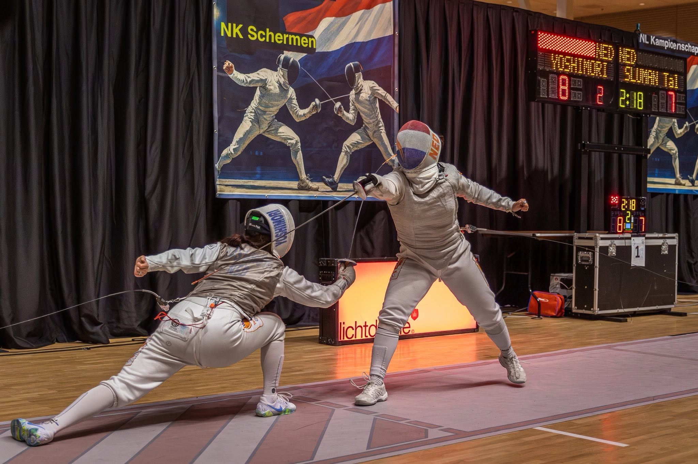
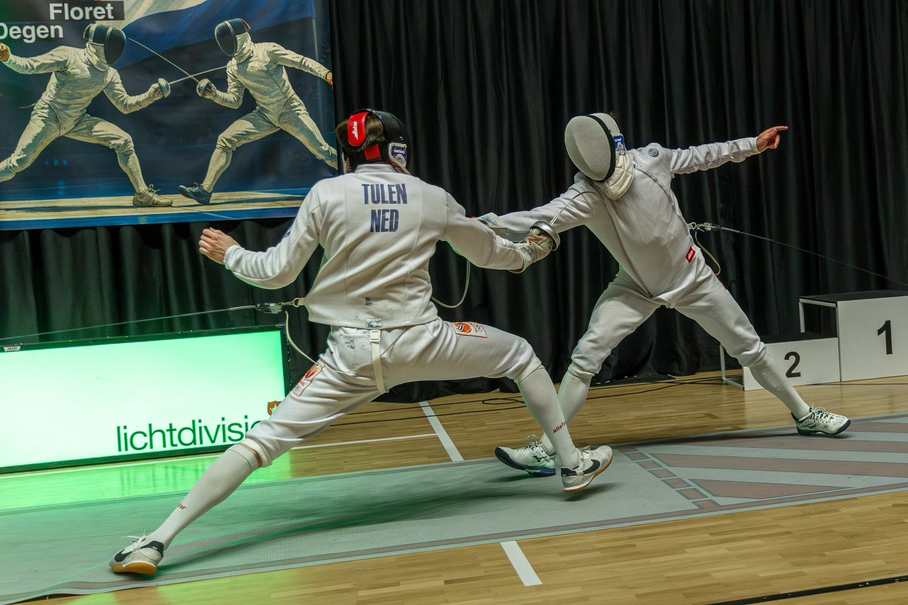
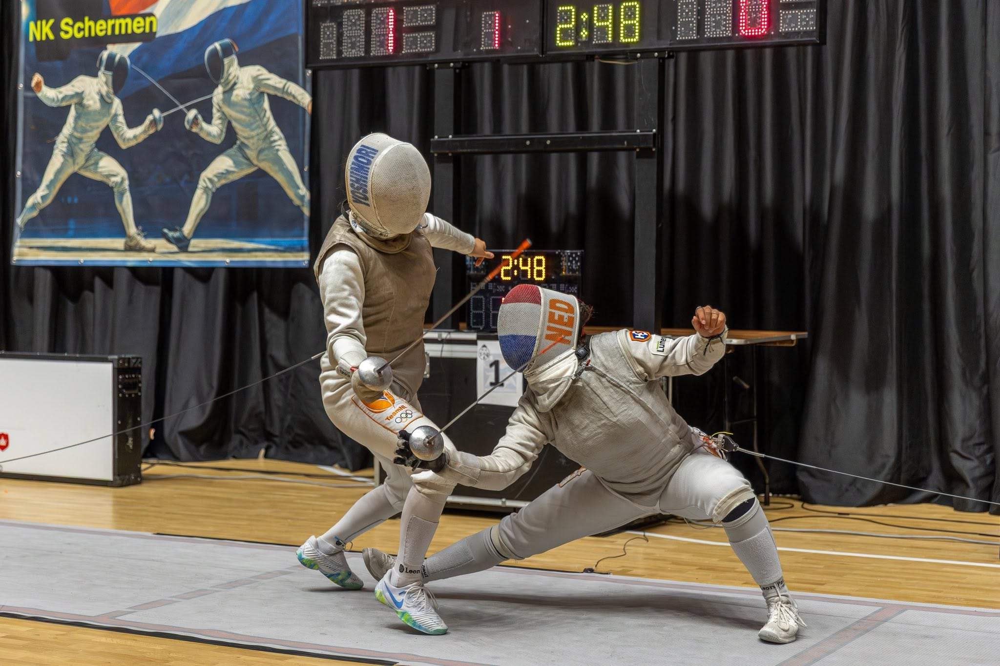
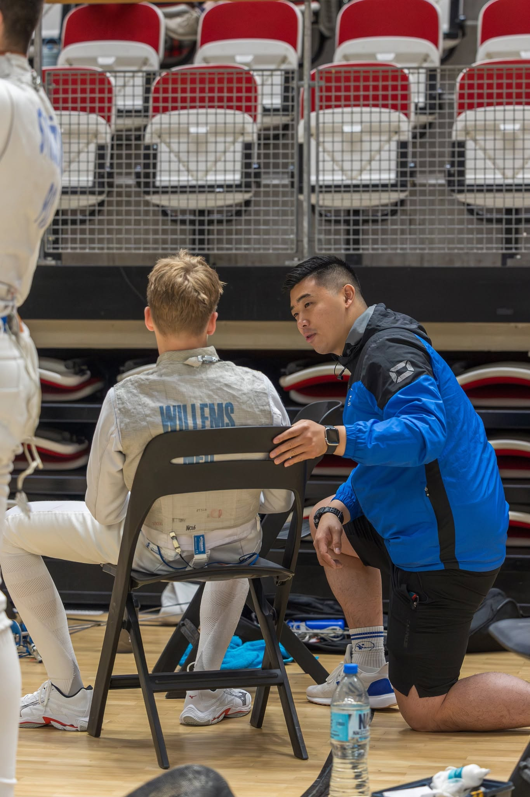

Ledengroei
Gericht op groei via verenigingsondersteuning, opleidingen en witte-vlekkenbeleid.
De Koninklijke Nederlandse Algemene Schermbond is opgericht in 1908 en behoort tot de oudste schermbonden ter wereld. De bond is een vereniging van verenigingen en ondersteunt schermend Nederland op breedte- en topsportniveau.
Gericht op groei via verenigingsondersteuning, opleidingen en witte-vlekkenbeleid.
Investering in trainers, scheidsrechters, reglementen en veilige sportomgeving.
Verbinden van recreanten, wedstrijdsporters, jeugd, veteranen en topsportprogramma's.



